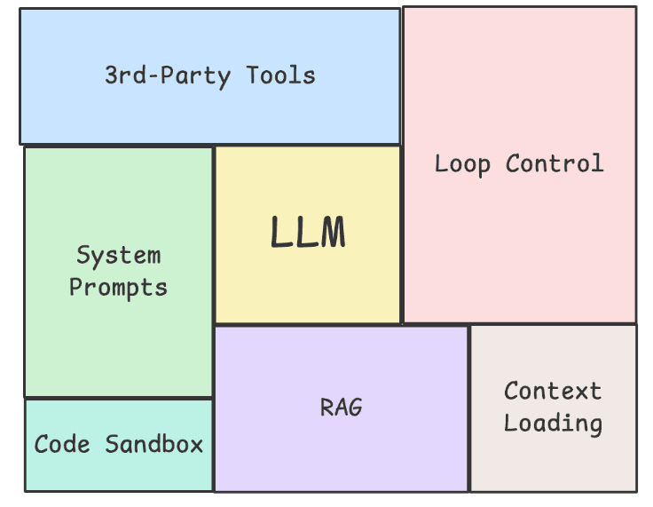
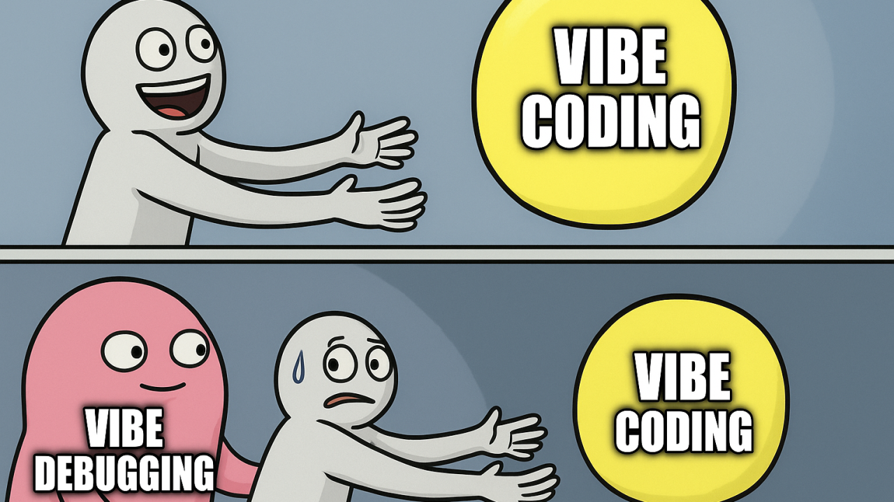
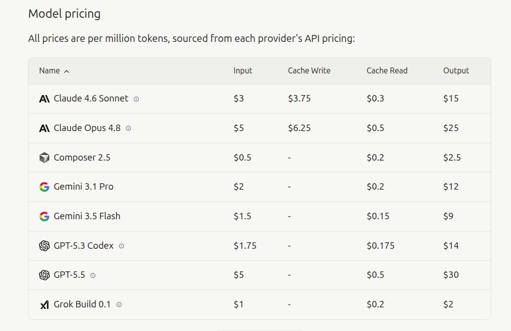
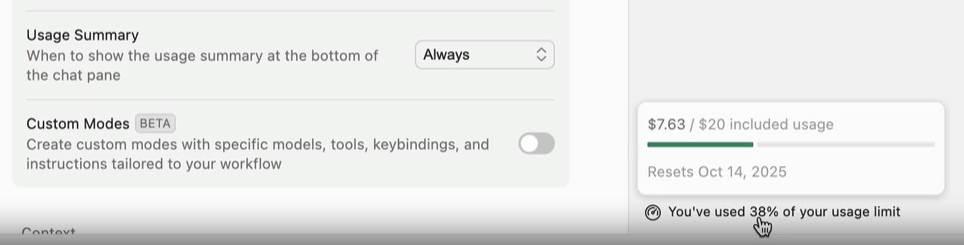
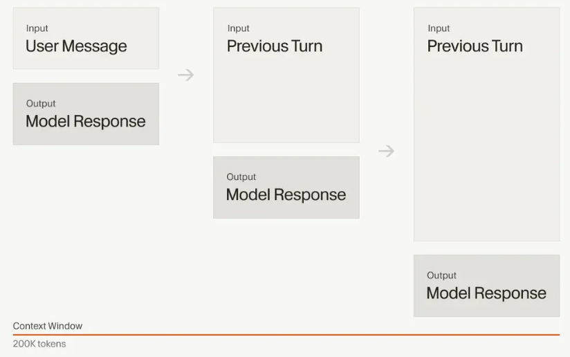
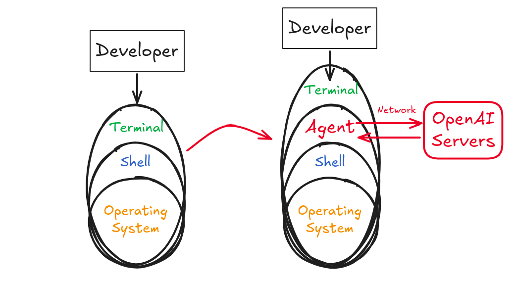

A Harness is every piece of code, configuration, and execution logic that isn’t the model itself. A raw model is not an agent. It becomes one once a harness gives it state, tool execution, feedback loops, and enforceable constraints.
– addyosmani
Agent = Model + Harness.
Examples:

An agent is an AI system that autonomously plans and executes coding tasks. You give the agent a high-level goal, and it breaks the goal down into steps, executes those steps with tools, and self-corrects when it hits errors.
The Model is the core engine; the LLM allowing the Agent reason & communicate.
Use the model picker dropdown at the top of the chat input to switch models, or press Ctrl / to cycle through models. The change applies to the current conversation going forward. Set a default model in Cursor Settings > Models.
You can switch models mid-conversation, for example when a faster model handled exploration but you need deeper reasoning for implementation. See Models & Pricing for the full list.
Addy Osmani wrote:
Look at the top coding agents side by side (Claude Code, Cursor, Codex, Aider, Cline) and they look more like each other than their underlying models do. The models are different. The harness patterns are converging. I don’t think that’s an accident. It’s the industry slowly finding the load-bearing pieces of scaffolding that turn a generative model into something that can ship.
– addyosmani
Vibe Coding is the practice of letting an LLM generate code based on loose, high-level prompts without the human developer understanding the underlying codebase.
While incredibly fast for spinning up initial prototypes, it breaks down quickly in production.
Relying on basic prompting means you are at the mercy of LLM non-determinism. A “vibe” that works today might break tomorrow with a minor model update.

The initial euphoria of effortlessly generating code is immediately haunted by a pink monster: Vibe Debugging. When the AI-generated code inevitably fails, the developer doesn’t actually know how it works, leading to a painful, clueless cycle of guessing new prompts to fix it.
Agentic Engineering means integrating AI into your existing development workflow. When quality software is the goal, there is no substitute for a skilled engineer. It is about enhancing what we can accomplish through thoughtful collaboration.
Ultimately, Agentic Engineering moves us away from the chaotic guesswork of vibe coding and brings back structure and determinism to software development.
In this course, we learn to mitigate the hallucinations and limitations that are inherent in AI models, and learn to make them work for us better.
For coding, this might means:
Programs are deterministic:
LLMs are statistical models:
| Capability | Deterministic Software | LLM-based AI Models |
|---|---|---|
| Consistency | 100% reproducible. | Variable; the same input can yield different outputs. |
| Exact Arithmetic | Flawless precision. | Guesses the next token; often fails complex math. |
| Auditability | Verifiable via stack traces. | “Black box” execution; unexplainable logic leaps. |
| State Management | Perfect recall via databases. | Limited by context windows; prone to dropping data. |
| Execution Efficiency | Executes discrete algorithms in microseconds. | Massive compute overhead for basic logic tasks. |
Why tokens matter?
AI models charge based on two types of tokens:
Output tokens typically cost 2-4x more than input tokens, because generating new content requires more computational work than just processing what you sent.

models pricing
Set Usage Summary to: "Always"

tokens usage summary

Essentially the problem is that AI models can only handle so much context, so we need to keep it fresh. Keep your conversations short and focused:
An Agent is a Man-in-the-Middle (MITM). It sits between the user and the system they are trying to control, intercepting the communication and routing it to servers hosting AI models, and back to the system to execute remotely generated instructions.

The User-Agent Interface
See Agent Security for more details.